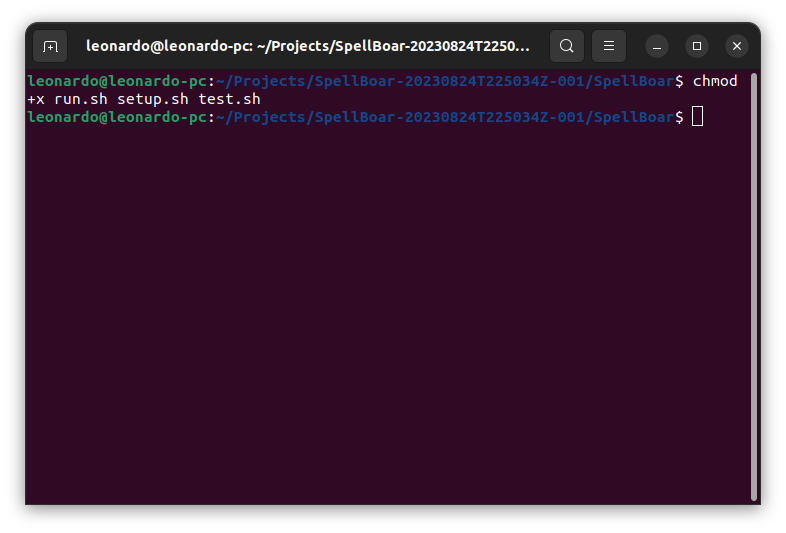

Leonardo Di Credico
Anthony Hlebania
Fernando Hiroaki Suzuki
Fernando Astolfo Dos Santos
1. Na pasta do programa o usuário terá que abrir o terminal na pasta para dar início ao programa
2. Dentro do terminal ele deve executar o comando "chmod +x run.sh setup.sh test.sh" para dar permissão de execução aos scripts
3. Primeiramente ele vai dar executar o comando “setup.sh” para instalar as bibliotecas necessárias para o programa rodar.(O openCV precisa já estar instalado)
4. Logo depois ele vai dar o comando “run.sh” para finalmente executar o SpellBoar
5. Com o programa em funcionamento o usuário agora deve posicionar uma carta na frente da câmera

6. Posicione o mouse em cima da carta e clique com o botão esquerdo do mouse.
7. E o programa automaticamente identifica a sua carta exibindo-a uma versão em alta resolução da mesma e com algumas estatísticas de tempo relacionadas ao processamento
8. Alternativamente o usuário pode marcar a caixa "Modo de teste sem câmera" para que o programa leia a entrada de uma imagem de teste. Esse modo é ativado automaticamente caso a webcam não possa ser acessada.